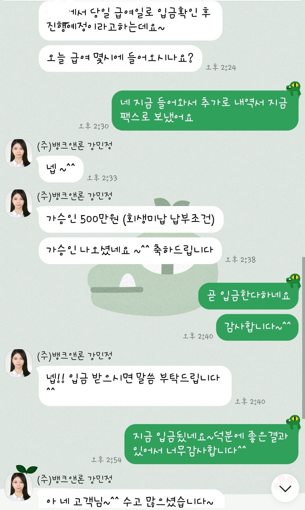

[개인회생자대출] 재회생자 대출후기

안녕하세요
저는 재회생을 하던중 급히 돈이필요해서 상담요청했고요
올해 6월입사하여 직장다닌횟수는 적었고 급여도 격일근무로 100만원받고 있었어요 기대출은 없었구요
재회생으로 57회차 납부하였고 2회미납있어서 사실 승인이 될까 걱정하며 상담했습니다
허나 강민정상담사님께서 긍정심사요청하셧다면서 한군데진행해보자하여 진행했어요
급여가 적어 요번달 급여 입금 확인과 2회미납조건이면
바로 입금해준다하여 급여입금내역서와 2회미납정리로
500만원 승인 받았습니다^^
상담하고 진행하는 동안 부결될까 많이 걱정 했는데
좋은 상담사님을 만나 좋은결과 받아서 너무행복해요
연체없이 거래 잘하다 회생끝나면 낮은금리로 다시 정리해보자고 말씀하셔서 더 감동이였습니다
뱅크앤론 너무 감사드려요